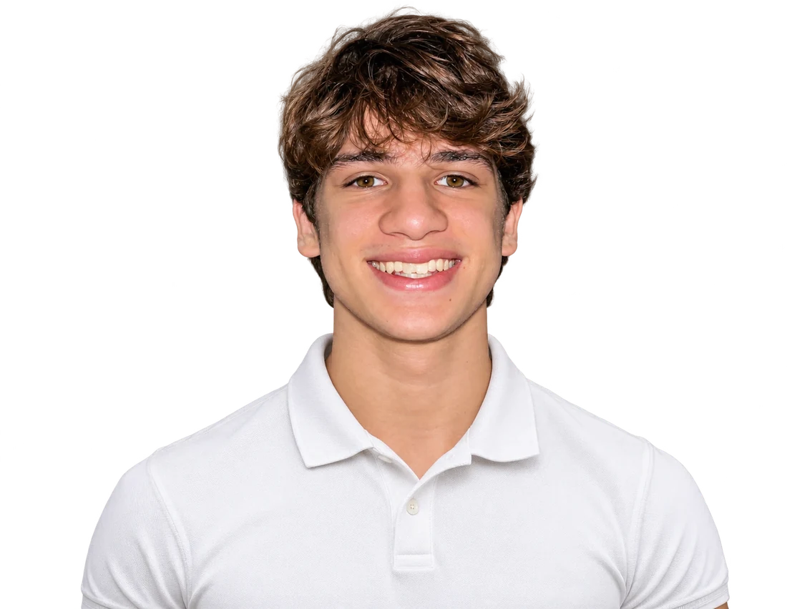

Mais pedido de Castanhal
Gen AI 2027
18 anosCastanhal · PA
R$ 1 miem vendas aos 15
Entrega grátis · remoto
Seu pedido · 1 AI Builder
Combo AI Builder
Murilo Brandão. Vem com agentes de IA em produção, uma universidade federal atendida e o histórico de quem já vendeu R$ 1 milhão.
- R$ 1 milhãoem vendas no e-commerce que criei aos 15
- UFRAassistente de IA no site de uma universidade federal
- Science Prorevisão de literatura com agentes de IA, no ar
- 179 subagentesorquestrados num filme feito 100% em código
- Clínicasistema com CRM, funis e automações n8n
Retirarjá removido
Observação do pedido
Pode mandar problema difícil. Eu devolvo resolvido e com métrica.
Entrega grátis: remoto, de Castanhal (PA)
Pronto para começar em fevereiro de 2027, 30 h por semana